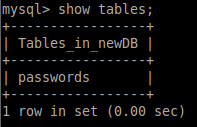
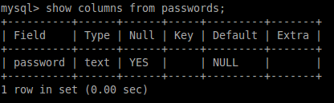
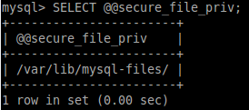

load_file
We can use the load_file function in the MySQL’s SQL implementation to access files
To do that:
1. we have to create a new table in a new (or existing) database
mysql> create database newDB;
mysql> create table newDB.passwords (password text);
mysql> create table newDB.passwords (password text);


2. load and show file on screen
mysql> load_file('/etc/passwd');
We cannot do that with /etc/shadow because MySQL software is typically running as a lower-privileged user on the host.
A MySQL instance should never be run as the root user
Remember that databases have their own users and permission models, which are separate but still bound to the limitations of the host OS permissions.
3. load file in table
mysql> insert into newDB.passwords values (load_file('/etc/passwd'));
4. show all the content of the table created
mysql> select * from newDB.passwords;

What to do if the command return NULL
If return NULL could be a problem:
◇ secure-file-priv security feature is enabled, below command give us the path where files can be loaded from
SELECT @@secure_file_priv

1- Add the following lines
[mysqld]
secure_file_priv=""
secure_file_priv=""
at the end of one of the following files depending on the version of MySQL:
- /etc/mysql/mysql.conf.d/mysqld.cnf
- /etc/mysql/my.cnf”
2- Restart MySQL
root@linux:/# sudo /etc/init.d/mysql restart
◇ caused by apparmour
mysql> /etc/init.d/apparmor stop
see here https://bugs.mysql.com/bug.php?id=38403